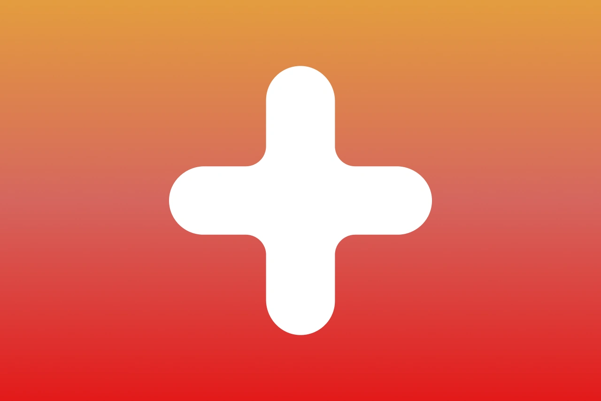
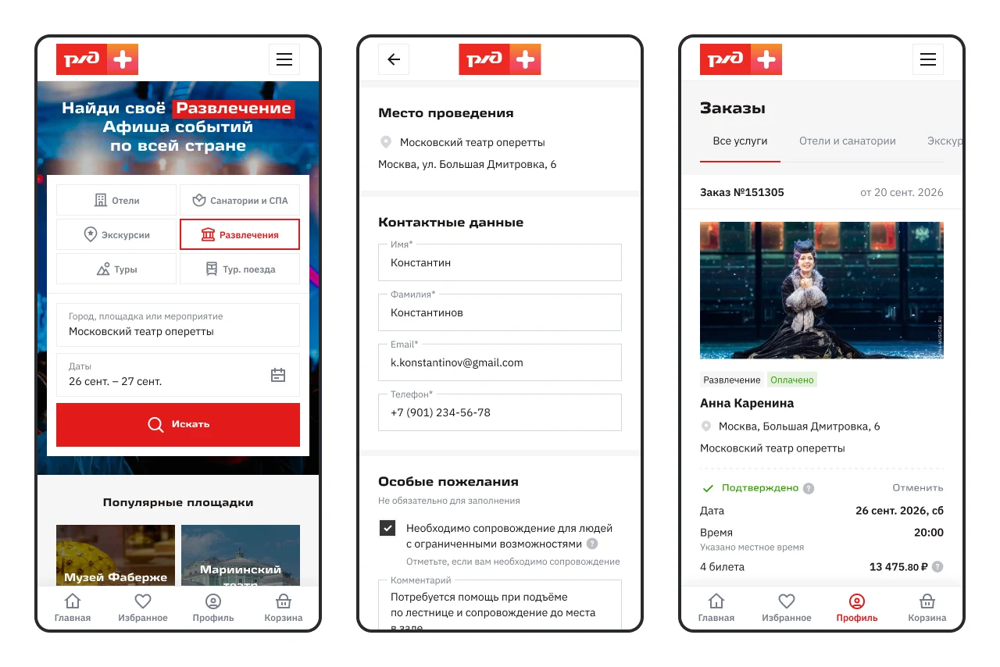
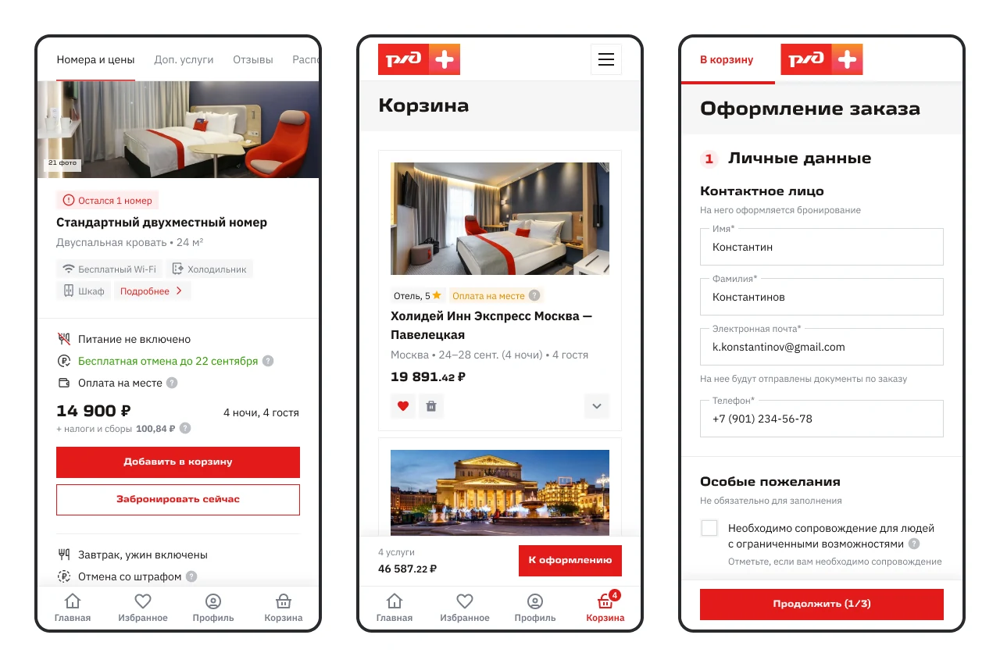
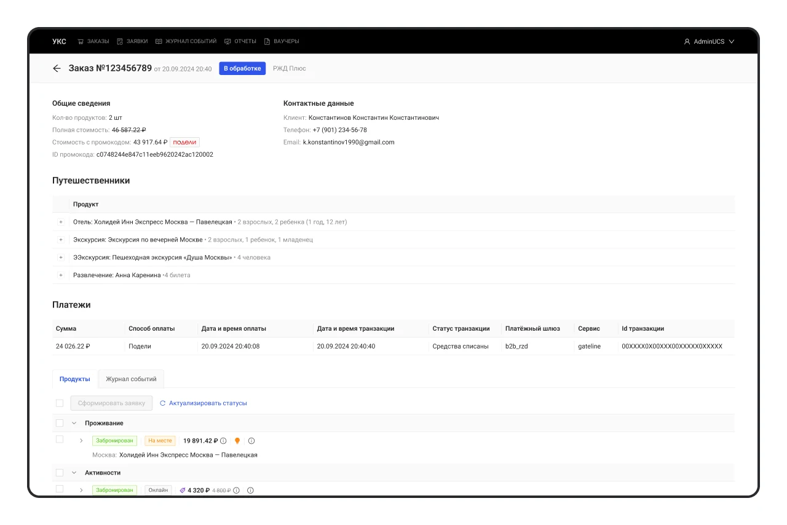
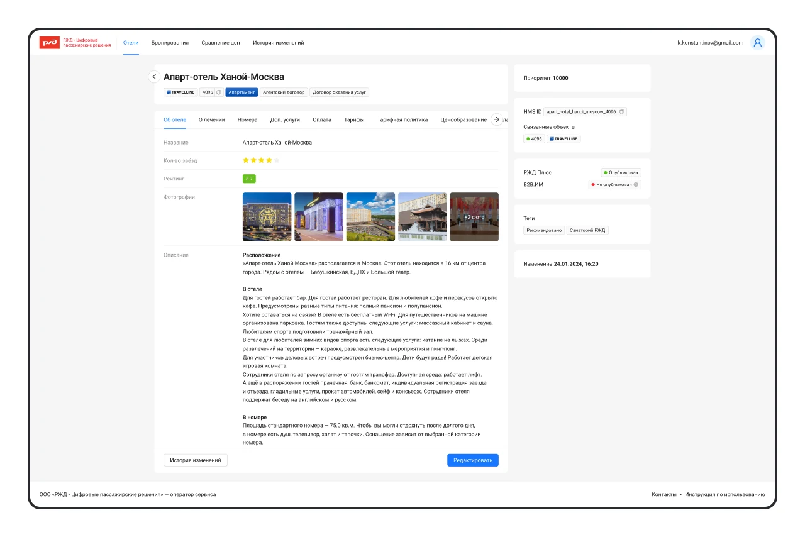
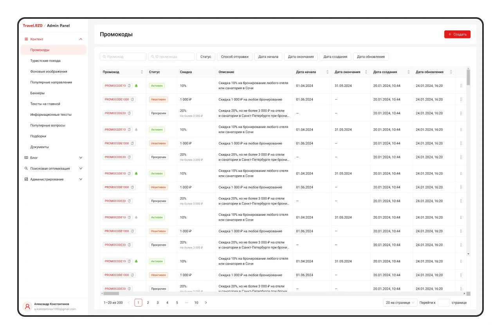

РЖД Плюс / 2022–2026
Сервис бронирования отелей, экскурсий, туров, развлечений и других туристических услуг под брендом РЖД.

Роль
UX/UI-дизайнер в составе аутсорсинговой дизайн-команды. Работал напрямую с аналитиками, продакт-менеджерами и разработчиками со стороны заказчика. Участвовал в анализе задач, обсуждении решений, согласовании интерфейсов и сопровождении реализации.
Зона ответственности
Проектирование пользовательских интерфейсов и сценариев для клиентской части сервиса и внутренних административных систем. Разработка новых функций и развитие существующих разделов платформы, подготовка макетов к разработке, поддержка и развитие UI-кита продукта.
Развил сервис бронирования туристических услуг
На момент начала работы сервис включал только два направления — бронирование отелей и экскурсий. В течение четырёх лет продукт постепенно развивался и превратился в полноценную платформу для бронирования различных туристических услуг. Помимо запуска новых разделов, команда регулярно улучшала существующий функционал и расширяла возможности сервиса.
Что сделал
- Спроектировал четыре новых раздела: Туры, Развлечения, Санатории и Туристические поезда.
- Улучшил сценарии бронирования в существующих разделах.
- Добавил возможность оставлять отзывы после завершения поездки.
- Спроектировал функционал дополнительных услуг при бронировании отелей.
- Разработал интерфейсы для email-коммуникаций: подтверждение бронирования, напоминания, благодарности и запросы на отзыв.

Внедрил корзину для комплексного бронирования
Одной из крупнейших задач стало внедрение корзины, позволяющей пользователям объединять несколько туристических услуг в одном заказе. Например, оформить бронирование отеля и экскурсии одновременно. Проектирование заняло около трёх месяцев, после чего функционал ещё несколько месяцев дорабатывался совместно с аналитиками и разработчиками до выхода в релиз.
Что сделал
- Спроектировал сценарий добавления разных туристических услуг в одну корзину.
- Разработал пользовательские сценарии оформления комплексного заказа.
- Поддерживал и дорабатывал функционал на этапе разработки до выхода в релиз.

Развил административную систему обработки бронирований
Практически каждое изменение пользовательской части сервиса требовало доработки внутренней административной системы, через которую менеджеры обрабатывали бронирования. По мере появления новых разделов и функций административная система также постоянно развивалась.
Что сделал
- Спроектировал интерфейсы для поддержки новых туристических направлений.
- Добавил поддержку комплексных бронирований из корзины.
- Разработал интерфейсы для работы с дополнительными услугами.
- Адаптировал административную систему под новые функции пользовательской части сервиса.

Спроектировал административную систему управления отелями
Для управления гостиничным контентом была разработана отдельная административная система. Она позволяла менеджерам работать с данными, поступающими от внешних поставщиков, а также самостоятельно управлять информацией об объектах размещения без участия разработчиков.
Что сделал
- Спроектировал интерфейсы управления карточками отелей.
- Разработал сценарии редактирования импортированных данных.
- Спроектировал инструменты управления ценообразованием и способами оплаты.
- Разработал интерфейсы просмотра истории изменений.
- Спроектировал раздел просмотра бронирований.

Спроектировал административную систему управления контентом
По мере развития сервиса объём контента значительно увеличился. Чтобы контент-менеджеры могли самостоятельно управлять наполнением платформы без участия разработчиков, была создана отдельная административная система управления контентом.
Что сделал
- Спроектировал интерфейсы управления статьями, путеводителями и другими разделами блога.
- Разработал инструменты управления баннерами, промокодами и тематическими подборками.
- Спроектировал интерфейсы редактирования SEO и маркетингового контента.
- Разработал разделы управления пользователями и ролями.
- Спроектировал инструменты управления статическими страницами со справочной информацией.

Выводы
«РЖД Плюс» — проект, на котором я четыре года развивал крупный цифровой продукт: от пользовательских сценариев до внутренних административных систем. Именно здесь сформировался мой интерес к развитию существующих сервисов, проектированию сложных интерфейсов и созданию удобных инструментов для внутренних пользователей.